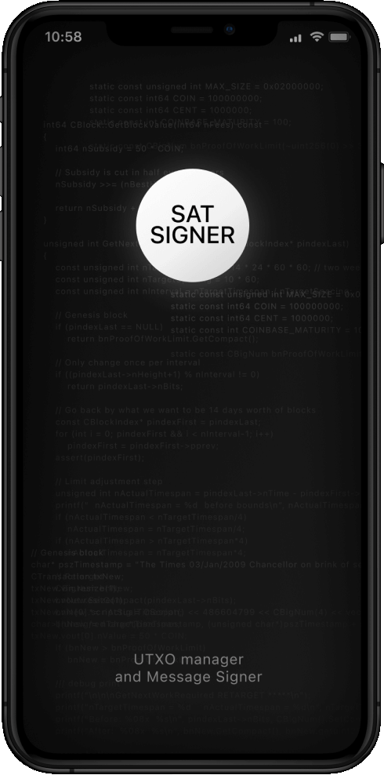

UTXO control
Bubble charts and selection tools so you choose exactly which outputs to spend.
Mobile self-custody that’s clear, private, and actually yours—no blind spots, no surprises.
Exclusive on Zapstore
SAT
SIGNER



Privacy-first Bitcoin signing with complete UTXO control. The same feature set as the open-source app.
Bubble charts and selection tools so you choose exactly which outputs to spend.
M-of-N wallets, sortedmulti descriptors, and per-cosigner PSBT tracking.
Single-signature, multi-signature, and watch-only on mainnet, testnet, and signet.
P2PKH, P2SH, nested and native SegWit, and Taproot (P2TR).
Manual fees, RBF, time-locks, and custom outputs. Electrum or Esplora backends.
Label transactions, addresses, and UTXOs. Import and export JSON, JSONL, and CSV.
BIP77 and BIP78 send and receive, with a normal transaction when Payjoin is unavailable.
AES-256 storage, PIN lock, duress PIN, and the option to drop the seed after key extraction.
No third-party analytics. MIT-licensed code you can audit.
Seed QR scanning, signature threshold checks, and per-cosigner PSBT export.
Descriptors, xpub formats, PSBTs over QR and NFC, and full account backup.
Sankey diagrams, balance timelines, fee-rate history, and network charts.
LND invoices and payments, plus Cashu mints for private tokens.
Decentralized label sync over DMs, with relays and a trusted-device list.
Blocks and transactions, fiat rates, and Bitcoin-to-energy conversion.
Keys stay on the device. Sensitive data is encrypted at rest, and the code is open to audit.
AES-256-CBC storage with PIN-protected access.
A separate PIN for situations where you cannot unlock normally.
Remove the mnemonic after the keys are extracted.
No third-party tracking. Labels stay yours, and payments can avoid a plain on-chain fingerprint.
The app does not send usage data to a third party.
BIP77 and BIP78 send and receive, with a normal transaction when Payjoin is unavailable.
BIP329 labels on device, with optional Nostr sync and export when you choose.
Inspect a transaction before you trust it. Hex, scripts, inputs, outputs, size, fees, and locktime.
Decode the bytes instead of accepting a summary.
See inputs, outputs, and script types in one view.
Size, fee, and time-locks are visible before you sign.
Questions and bugs go to the public tracker. Security reports follow the published policy.
Open an issue on GitHub.
Read the security policy before reporting a vulnerability.
satsigner/satsigner is MIT licensed.
“Finally, a mobile wallet where I can actually see what I have and where it goes—without the spreadsheet.”
— Beta tester (replace with real quote and link to source)
Disclaimer: State management and stores have changed in newer versions. Using these older builds may corrupt or invalidate your app data. Use test-only devices or profiles. Do not use with real funds or important data.